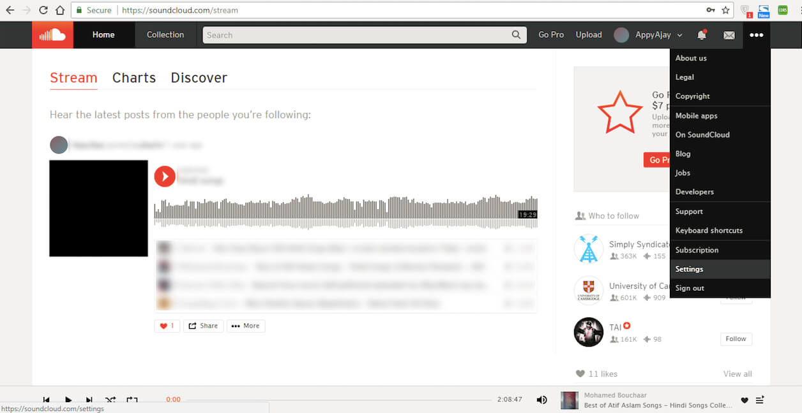
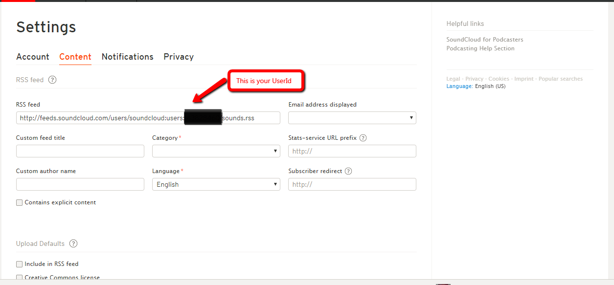

1. If you have an account with SoundCloud, login, else Signup
2. Once you are on Home screen of your SoundCloud account, Click on Settings from the dropdown menu present on the top right hand side corner of the screen
3. Switch to Content tab. Here, you will see your User ID, Copy it.
